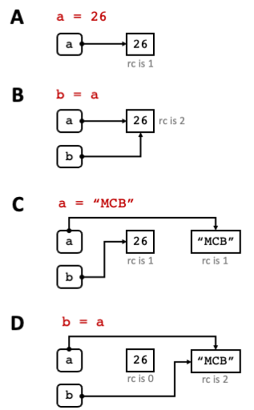

Data Types#
Data can be of many forms. Python has several built-in data types. The most commonly used data-types are below:
Data Type |
Description |
Example |
|---|---|---|
|
Integers (whole numbers) |
40 |
|
Numbers with decimal points (default) |
27.5 |
|
Strings; sequence of characters |
“Hello World!” |
|
Boolean; can only be |
Every variable (object) in Python has a type. The type() function returns the type of the object as in the example below:
a, b, c = 22, "22", 22.0
print(type(a))
print(type(b))
print(type(c))
<class 'int'>
<class 'str'>
<class 'float'>
Tip
The first line is an example of multiple assignment where instead of assigning values to a single variable one line at a time,
you can assign values to multiple variables on the same line. In the example above, a is assigned to 22, b to "22" and c to 22.0.
Strings#
Textual data is stored in str objects as shown in String utility functions. We can distinguish a string object as it
is enclosed in quotes "".
String Escape Sequences#
Strings can be enclosed in single quotes ‘ ‘ or double quotes “ “. In this course we will be using double quotes.
Sometimes, you may want to include quotes as part of your string value. This can still be done in Python by using Escape
sequences (see example below). Special characters are escaped with backslashes \ in strings. The table below shows more Python String
Escape sequences.
Escape Sequence |
Translation |
|---|---|
‘ |
Single quote (‘) |
“ |
Double quote (“) |
\ |
Backslash () |
\t |
Tab |
\n |
new line |
Below is an example of a string that contains quotes:
a = "here is an example of 'single quotes' and \"double quotes\"."
print(a)
here is an example of 'single quotes' and "double quotes".
If you don’t want Python to interpret escaped characters, use r before the string as in the example below:
print(r"C:\home\textfile.txt")
C:\home\textfile.txt
Formatted String Literals#
Another useful operation with strings are formatted string literals, also known as f-strings. F-strings allow you
to include and format Python expressions in a string. They start with f or F followed by the string and accept
expressions enclosed in { }. To understand better how f-strings work, below is an example using strings as
expressions:
name = "Alexia"
location = "Cambridge"
print(f"My name is {name} and I live in {location}")
My name is Alexia and I live in Cambridge
Now try one with your own name and location!
f-strings are very useful when we need to format numbers. To format decimal numbers up to a specified number of decimal
places we use f-strings as following:
temperature = 27.78823
# display temperature to 1 decimal place
print(f"The temperature is {temperature:.1f}")
The temperature is 27.8
Here temperature is the float we want to print. After the : is the specification of how many decimal places we want it
to be printed .1f.
Immutable objects#
In Python, the built-in data types we have looked at so far, such as str, int, float, bool are
immutable. This means, that once a value is assigned to them, that object cannot be changed. Every time we create a
variable in Python and assign it a value, that value is created as an object in memory with a unique object ID. If
an object with the same value already exists in memory, however, Python will make your new variable point to this existing
object in memory.
To understand better how objects are created in memory the example below shows a step-by-step process of what happens in memory when we create new variables and assign values to variables.

Fig. 2 Example of object references and objects.
rc is the reference count (see Garbage Collection section).#
If you want to check whether a variable is referencing the same object as another variable or not, use the id() function,
which given a variable name as an argument, it returns the ID of an object in memory that the variable is pointing to.
The code below further confirms the pointers shown in Fig. 2 by using the id() function.
# Step A
print("Step A")
a = 26
print("a is referencing object", id(a), "in memory")
# Step B
print("\nStep B")
b = a
print("a is referencing object", id(a), "in memory")
print("b is referencing object", id(b), "in memory")
# Step C
print("\nStep C")
a = "MCB"
print("a is referencing object", id(a), "in memory")
print("b is referencing object", id(b), "in memory")
# Step D
print("\nStep D")
b = a
print("a is referencing object", id(a), "in memory")
print("b is referencing object", id(b), "in memory")
Step A
a is referencing object 4371481616 in memory
Step B
a is referencing object 4371481616 in memory
b is referencing object 4371481616 in memory
Step C
a is referencing object 4417926192 in memory
b is referencing object 4371481616 in memory
Step D
a is referencing object 4417926192 in memory
b is referencing object 4417926192 in memory
Garbage collection#
All this memory management is done automatically for you in Python and you do not need to worry about allocating or freeing memory (as the case with some low level programming languages such as C). Objects are garbage collected when they have no object references pointing to them (such as the object with the value of 26 in the example above, at the end of the example code). This process is known as reference counting. When an object in memory has no variables pointing to it, it essentially means that the current program code does not need it anymore, so Python is free to garbage collect it. For the garbage collection process to be triggered there is a threshold number of objects that need to be exceeded, that is, garbage collection is not done immediately after an object has a reference count of 0.
Exercise 2 (Variables and their types)
Level:
In this exercise we are going to explore the values and types of variables after performing oerations on them. Watch the values of these variables in PyCharm as you proceed through the exercise.
Perform the following tasks:
Create two variables
aandband assign them the value of10.Print the value and type of
aandb.Assign
ato22.What is the value of
aandb? What are their types?Create a new variable
cwith the value of \(a\div3\).Print the value of
cto 2 decimal places and its type.
Solution to ( 2
# 1
a = b = 10
# 2
print("a is", a, "of type", type(a))
print("b is", b, "of type", type(b))
#3
a=22
#4
print("a is", a, "of type", type(a))
print("b is", b, "of type", type(b))
#5
c = a/3
#6
print(f"c is {c:.2f} of type {type(c)}")
a is 10 of type <class 'int'>
b is 10 of type <class 'int'>
a is 22 of type <class 'int'>
b is 10 of type <class 'int'>
c is 7.33 of type <class 'float'>